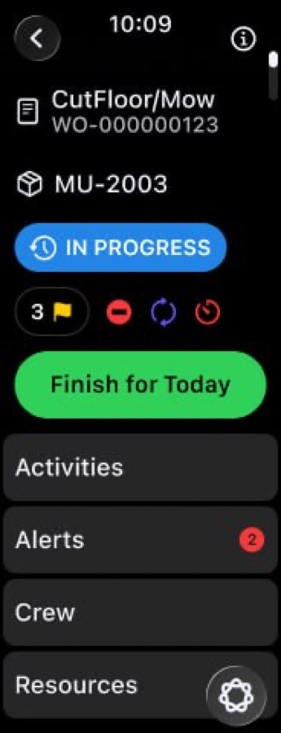
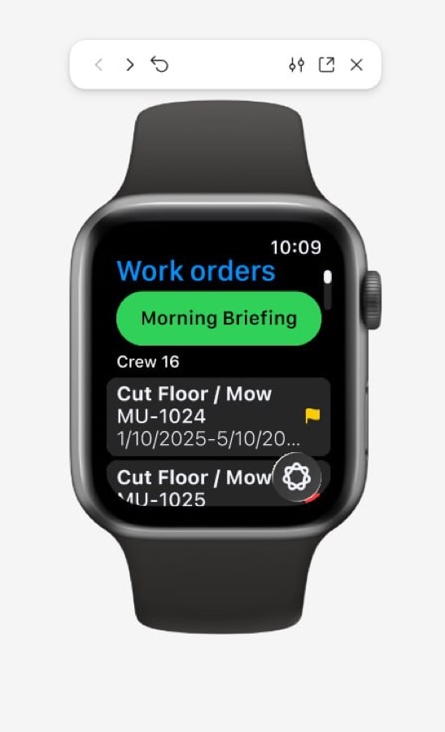
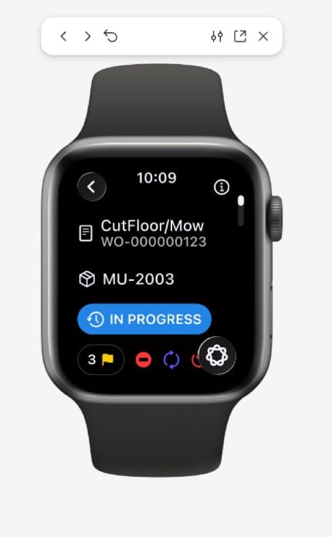

Apple Watch Voice AI (R&D / demo)
An R&D demo for the customer's executives explored a hands-free voice assistant on Apple Watch for field workers. Owned the Apple Watch client and its iPhone relay end to end in a team of seven. Designed and implemented watchOS interaction flows, an iPhone relay for live audio and WebSocket traffic, and structured-response mapping within agreed contracts. Implemented a custom emergency flow and Work Point details, hazards, maps, and navigation across the watch and phone. Structured replies selected known screens and actions rather than executing arbitrary model instructions. After delivering the demo, evaluated an internal AI-assisted iOS development workflow using Jira requirements and visual references. Delivered a TestFlight demo package with codebase and documentation.
- Implemented a custom emergency flow on watchOS
- Built the voice conversation interface and an iPhone relay for WebSocket communication and live audio
- Translated structured AI commands into UI actions on the device
- Implemented Work Point maps, hazards, and navigation across the watch and phone
SwiftUI · WatchKit · Swift Concurrency · WatchConnectivity · URLSessionWebSocketTask · AVFoundation · Audio Streaming · Structured AI Responses · watchOS · AI-Assisted Development · VelocityAI · Git · Xcode · TestFlight · Structured Outputs


